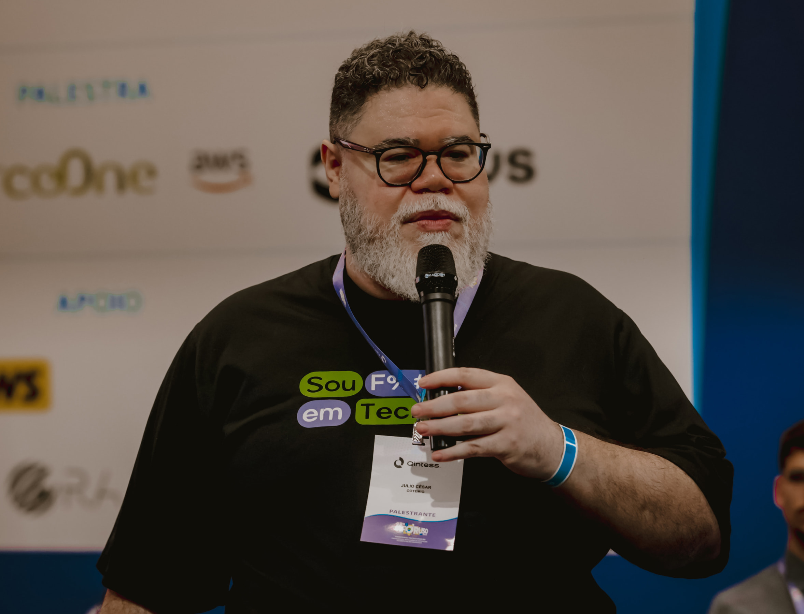
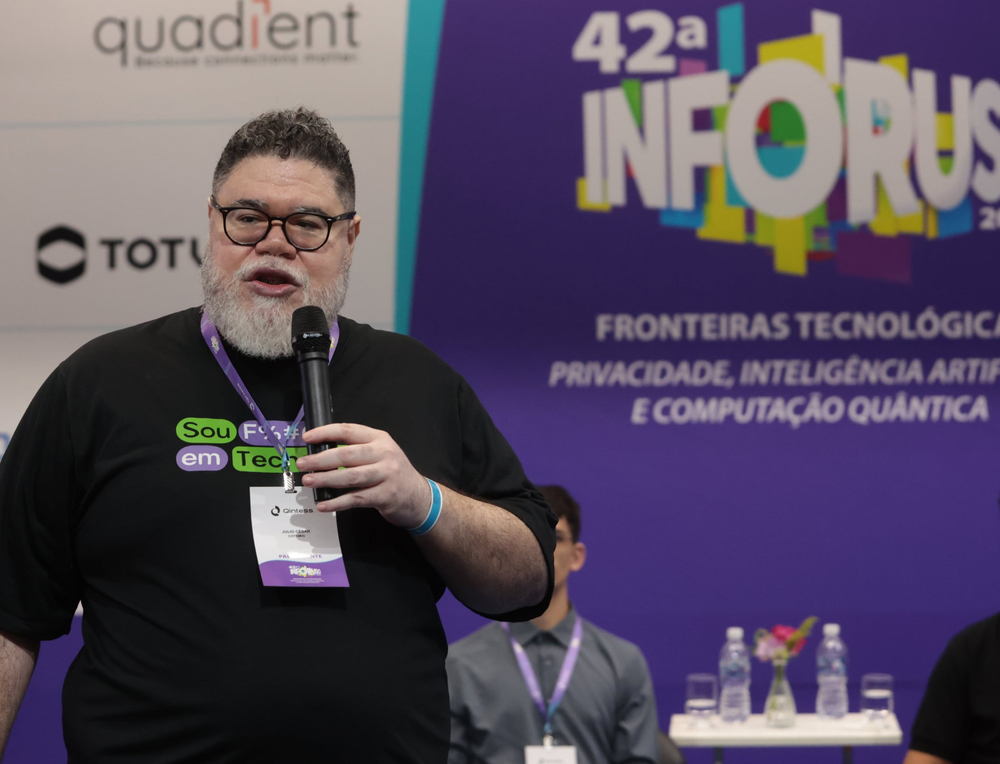

PROF. DR.
JULIO CESAR
Transforming society through quality education, technology, and critical thinking
PROF.
DR.
JULIO
CESAR
(About me)
My journey integrates Logic, Philosophy, Mathematics, and Technology, guiding students toward a critical and structured approach to knowledge.
(Who I am)
I value conceptual clarity and believe intellectual development is the foundation for autonomous and responsible thinking. Beyond teaching, I work in research and the production of educational content.
(My education)
Philosophy & Technology
PhD at UFMG in Philosophy and Information Technology focused on reflection about systems, knowledge, and the impact of technology on modern society.
(2019-2024)Business Administration
Master's degree in Business Administration focused on developing an analytical perspective, connecting management, decision-making, and conscious use of technology.
(2012-2014)Logic
PhD in Mathematical Logic at UFMG focused on structuring thought and conceptual rigor, with emphasis on logical foundations applied to science.
(2025-2026)(Contact me)

Online course to develop critical computational thinking
I developed an online course to develop critical thinking, going beyond the use of tools and superficial programming. The proposal is to understand the foundations of computing, its logic, limitations, and impacts. The course is aimed at those who seek to understand computing in a structured and conscious way, within the current context of artificial intelligence and digital transformation.
Postgraduate Program in Quantum Computing
I am part of the faculty of the Postgraduate Program in Quantum Computing at PUC Minas, a course focused on training specialists in one of the most promising areas of technology. The specialization covers everything from fundamentals to applications in artificial intelligence, information security, computational optimization, and quantum algorithm development, preparing professionals for the challenges of the next generation of computing.

I am open to partnerships in education, research & innovation.
I seek partnerships that promote critical thinking, scientific foundations, and the integration between theory and practice. I am available for institutional partnerships, lectures, and outreach initiatives.